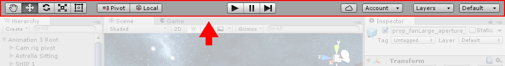

了解界面
请花一些时间查看并熟悉 Editor 界面。Editor 主窗口由选项卡式窗口组成，这些窗口可重新排列、分组、分离和停靠。
因此，Editor 的外观可能因项目和开发者而异，具体取决于个人偏好以及正在进行的工作类型。
Windows 的默认布局目标是便于实际访问最常用的窗口。如果还不熟悉 Unity 中的不同窗口，可通过选项卡中的名称识别它们。最常见和最有用的窗口显示在默认位置，如下所示：
Project 窗口
Project 窗口显示可在项目中使用的资源库。将资源导入项目时，它们会显示在此处。 请了解有关 Project 窗口的更多信息。
Scene 视图
Scene 视图可用于直观导航和编辑场景。根据正在处理的项目类型，Scene 视图可显示 3D 或 2D 透视图。 请了解有关 Scene 视图和 Game 视图的更多信息。
Hierarchy 窗口
Hierarchy 窗口是场景中每个对象的分层文本表示形式。场景中的每一项都在层级视图中有一个条目，因此这两个窗口本质上相互关联。层级视图显示了对象之间相互连接的结构。 请了解有关 Hierarchy 窗口的更多信息。
Inspector 窗口

Inspector 窗口可用于查看和编辑当前所选对象的所有属性。由于不同类型的对象具有不同的属性集，因此 Inspector 窗口的布局和内容会有所不同。 请了解有关 Inspector 窗口的更多信息。
工具栏

工具栏提供对最基本工作功能的访问。左侧包含用于操作 Scene 视图及其中对象的基本工具。中间是播放、暂停和步进控制工具。右侧的按钮用于访问 Unity 云服务和 Unity 帐户，然后是层可见性菜单，最后是 Editor 布局菜单（提供一些备选的 Editor 窗口布局，并允许保存自定义布局）。
工具栏不是窗口，是 Unity 界面中唯一无法重新排列的部分。
请了解有关工具栏的更多信息。
Search Words: Vivandiere. A name for female service soldiers that accompanied the French army in the 18th–19th centuries. -Wikipedia